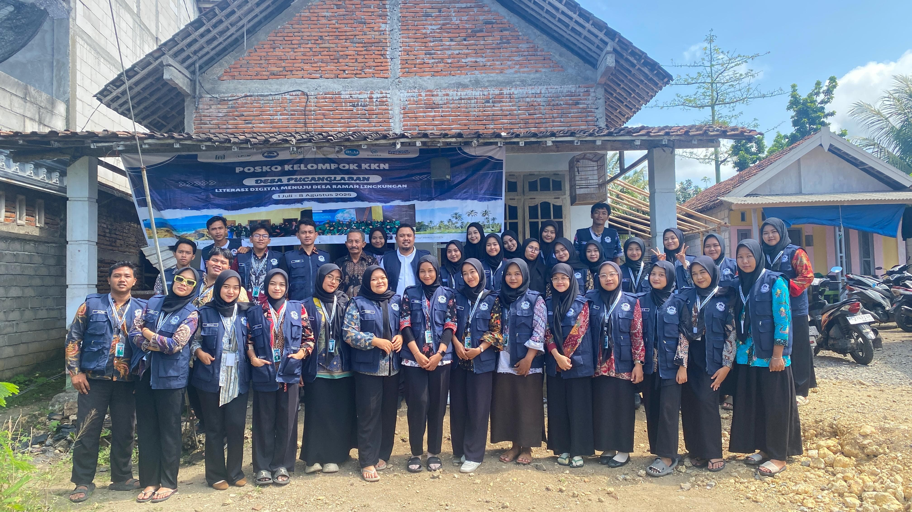

KKN Desa Pucanglaban 2025
Satu Sentuhan untuk Jelajah Pucanglaban
Menyusuri Jejak Alam, Budaya, dan Potensi Lokal yang Mengagumkan

Menyusuri Jejak Alam, Budaya, dan Potensi Lokal yang Mengagumkan

Dulu, jauh sebelum Desa Pucanglaban dikenal seperti sekarang, wilayah ini hanyalah hutan lebat yang masih menjadi bagian dari Desa Demuk, sebuah desa yang dipimpin oleh tokoh dari Mataram bernama Doro Djayeng Kusumo.
Sekitar tahun 1890, datanglah seorang pria bernama Ki Singo Semito. Ia membuka lahan di hutan belantara bagian selatan Demuk dan menemukan sebuah pondok kecil di tengah hutan—Padepokan Trojiwo, dihuni oleh seorang pertapa bernama Ki Todjoyo atau Mbah Jiwo, yang juga diyakini berasal dari Mataram.
Di depan padepokan itu berdiri kokoh sebuah pohon tileng besar yang diyakini sudah ada sebelum padepokan berdiri. Pohon itu digunakan Mbah Jiwo untuk bertapa, dan hingga kini masih tegak berdiri, dianggap keramat oleh warga, serta dijadikan sebagai punden desa dan tempat upacara adat setiap awal musim tanam.
Memasuki tahun 1900, semakin banyak pendatang dari wilayah barat Jawa Tengah yang menetap di daerah itu. Mereka mendirikan rumah dan membuka lahan. Daerah itu dipenuhi pohon pucang dan laban, sehingga kelak dikenal dengan nama Pucanglaban.
Melihat pertumbuhan wilayah yang pesat, Doro Djayeng Kusumo menunjuk seorang warga muda bernama Ki Kromo Karyo asal Cuwelo, Wonosari, Gunung Kidul untuk memimpin kawasan baru ini sebagai wakil dari Desa Demuk. Kepemimpinan Ki Kromo Karyo membawa kemajuan, dan akhirnya pada tahun 1904, wilayah ini resmi berpisah dari Desa Demuk dan menjadi Desa Pucanglaban.
Terwujudnya Kesejahteraan Masyarakat Melalui Peningkatan Sumberdaya Manusia Yang Profesional Berdasarkan Iman dan Taqwa
(1) Peningkatan pelayanan pendidikan yang murah dan berkualitas serta pelestarian/pengembangan kebudayaan. (2) Peningkatan pelayanan di bidang kesejahteraan yang murah dan berkualitas. (3) Mewujudkan pemerintah yang bersih dan baik, transparan, akuntable, responsif dan demokratis. (4) Peningkatan pembangunan infrastruktur yang berbasis pemerataan pembangunan dan pengembangan wilayah untuk mendorong percepatan pembangunan sektor – sektor lain. (5) Pembangunan ekonomi kerakyatan berbasis (UKM, pertanian, peternakan, perikanan, dan pariwisata serta perkebunan) melalui kegiatan kewirausahaan. (6) Pengentasan dan penanggulan kemiskinan pola terpadu.
Desa Pucanglaban terletak di wilayah dataran tinggi dengan ketinggian antara 225 hingga 290 meter di atas permukaan laut. Luas wilayahnya mencapai 22,2 km², menjadikan desa ini memiliki bentang alam yang cukup luas dan beragam. Secara administratif, Desa Pucanglaban berbatasan langsung dengan:
Sebelah utara: Desa Sumberbendo (Kecamatan Pucanglaban)
Sebelah timur: Desa Plandirejo (Kecamatan Bakung, Kabupaten Blitar)
Sebelah selatan: Samudra Indonesia
Sebelah barat: Desa Kalidawe (Kecamatan Pucanglaban)
Wilayah desa ini terbagi menjadi tiga dusun, yaitu:
(1)Dusun Pucanglaban – terdiri dari 4 RW dan 8 RT
(2)Dusun Apakbrajang – terdiri dari 6 RW dan 14 RT
(3)Dusun Panggungpucung – terdiri dari 4 RW dan 9 RT
Setiap dusun memiliki struktur sosial yang terorganisir dan berperan penting dalam mendukung kehidupan masyarakat sehari-hari, baik dalam bidang sosial, budaya, maupun pembangunan.
Jumlah Penduduk Desa Pucanglaban Per Juni 2025
(1)Laki-laki : 2.501
(2)Perempuan : 2.542
Total : 5.043
Jumlah Kepala Keluarga Desa Pucanglaban : 1.670


123 Campsite Avenue, Wilderness, CA 98765
info@coffeeshopwebsite.com
(123) 456-78909
Monday - Friday: 9:00 AM - 5:00 PM
Saturday: 10:00 AM - 3:00 PM
Sunday: Closed
www.codingnepalweb.com